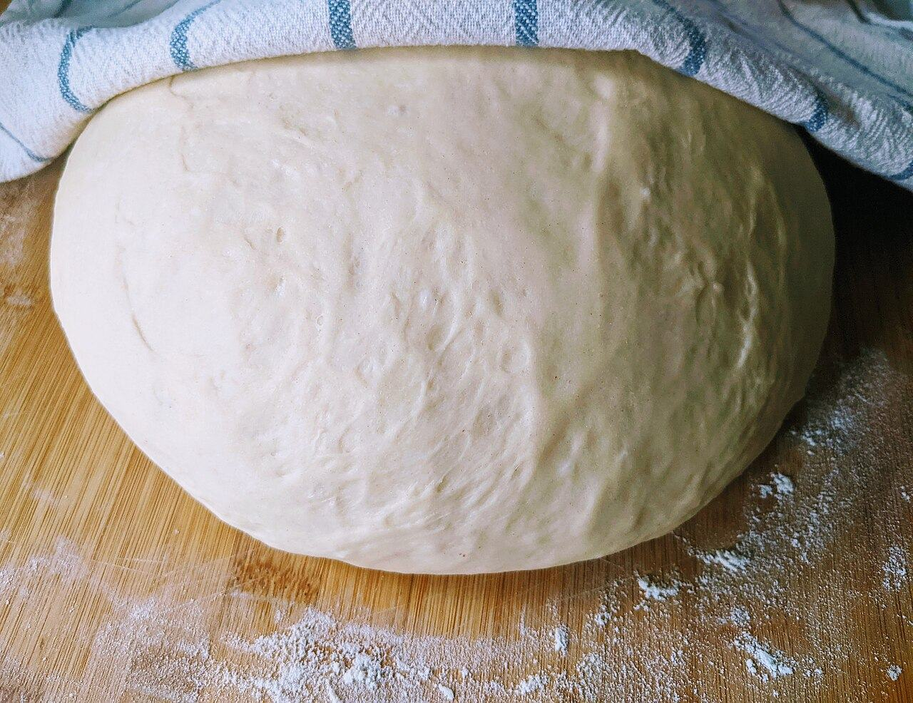
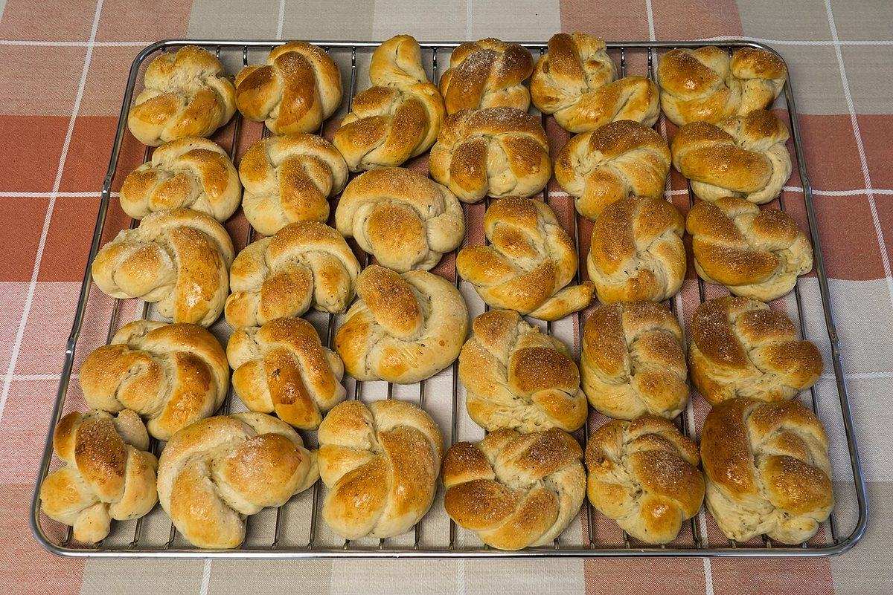

2 / 店のこと
店のこと
屋号
自然酵母と石窯パン Bunga ぶんが
屋号に「自然酵母と石窯パン」とあるベーカリーです。確認できているのは屋号・所在地・Instagramだけで、メニューや営業時間などは準備中です。実際の様子は、店のInstagramでご確認ください。
写真(イメージ)
生地から焼き上がりまで



写真はフリー素材のイメージです。お店の写真ではありません。
このサイトについて
配置図という切り口
コインプッシャーの部位を配置図にするという切り口は、制作側の連想です。お店の理念・由来とは無関係で、お店の考えを示すものでもありません。
- 1投入口コインを入れる細い口。ここから落ちたコインが、ステージの奥へ向かう。
- 2ステージコインを並べて置いておく、水平な棚板。
- 3プッシャーステージの奥から手前へ往復して、コインを押し出す板。
- 4落下口ステージの手前の端。押されたコインがこぼれ落ちる縁。
- 5受け皿落ちてきたコインを受け止める、手前の浅い皿。
- 6ガラスカバー中のようすを見るための、前面の透明な板。
写真(イメージ)
焼き網とかごのパン


ご案内
確認できていること
| 所在地 | 〒399-8603 長野県北安曇郡池田町中鵜1376 |
|---|---|
| 電話 | 準備中 |
| 営業時間 | 準備中 |
| 定休日 | 準備中 |
| ご予約 | 準備中 |
| 駐車場 | 準備中 |
| SNS | Instagram @azuminobunga |